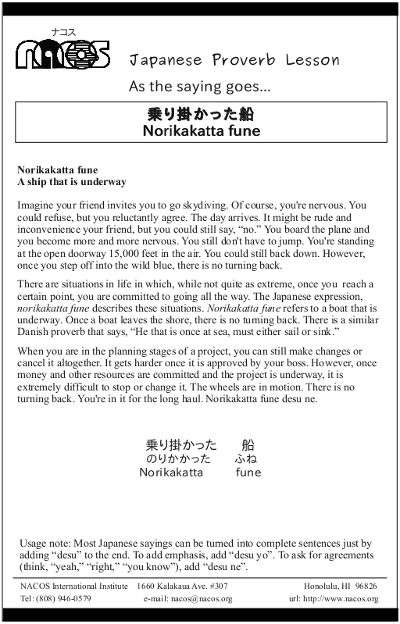

Norikakatta fune
A ship that is underway
Imagine your friend invites you to go skydiving. Of course, you're nervous. You could refuse, but you reluctantly agree. The day arrives. It might be rude and inconvenience your friend, but you could still say, “no.” You board the plane and you become more and more nervous. You still don't have to jump. You're standing at the open doorway 15,000 feet in the air. You could still back down. However, once you step off into the wild blue, there is no turning back.
There are situations in life in which, while not quite as extreme, once you reach a certain point, you are committed to going all the way. The Japanese expression, norikakatta fune describes these situations. Norikakatta fune refers to a boat that is underway. Once a boat leaves the shore, there is no turning back. There is a similar Danish proverb that says, “He that is once at sea, must either sail or sink.”
When you are in the planning stages of a project, you can still make changes or cancel it altogether. It gets harder once it is approved by your boss. However, once money and other resources are committed and the project is underway, it is extremely difficult to stop or change it. The wheels are in motion. There is no turning back. You're in it for the long haul. Norikakatta fune desu ne.
Usage note: Most Japanese sayings can be turned into complete sentences just by adding “desu” to the end. To add emphasis, add “desu yo”. To ask for agreements (think, “yeah,” “right,” “you know”), add “desu ne”.

| © 1995-2013 NACOS International Institute. All Rights Reserved. |